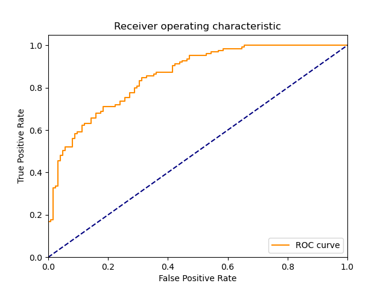

| 6 |
NonLinearSVM |
Non Linear Support Vector Classification |
0.031207 |
0.015666 |
118 |
66 |
59 |
7 |
0.944 |
0.528 |
0.666667 |
0.736 |
0.264 |
0.781457 |
1.056983 |
25.041011 |
49.883847 |
 |
 |
 |
| 5 |
LinearSVM |
Linear Support Vector Classification |
0.078120 |
0.000000 |
99 |
85 |
40 |
26 |
0.792 |
0.680 |
0.712230 |
0.736 |
0.264 |
0.750000 |
1.045811 |
9.600586 |
inf |
|
|
|
| 2 |
BernoulliNBC |
Naive Bayes classifier for multivariate Bernoulli models |
0.000000 |
0.000000 |
108 |
60 |
65 |
17 |
0.864 |
0.480 |
0.624277 |
0.672 |
0.328 |
0.724832 |
0.931322 |
inf |
inf |
 |
 |
|
| 4 |
KNeighborsClassifier |
Classifier implementing the k-nearest neighbors vote |
0.000000 |
0.015677 |
115 |
52 |
73 |
10 |
0.920 |
0.416 |
0.611702 |
0.668 |
0.332 |
0.734824 |
0.930187 |
inf |
46.872123 |
 |
 |
 |
| 1 |
RealBoost |
An RealBoost classifier |
14.031234 |
0.015620 |
102 |
62 |
63 |
23 |
0.816 |
0.496 |
0.618182 |
0.656 |
0.344 |
0.703448 |
0.901040 |
0.050134 |
45.034433 |
 |
 |
 |
| 3 |
GaussianNBC |
Gaussian Naive Bayes (GaussianNB) |
0.000000 |
0.000000 |
122 |
36 |
89 |
3 |
0.976 |
0.288 |
0.578199 |
0.632 |
0.368 |
0.726190 |
0.882254 |
inf |
inf |
 |
 |
 |
| 0 |
DiscreteNBC |
DiscreteNBC |
0.171832 |
0.078153 |
56 |
66 |
59 |
69 |
0.448 |
0.528 |
0.486957 |
0.488 |
0.512 |
0.466667 |
0.623741 |
2.715833 |
5.971165 |
 |
 |
 |
{kind=link}
{kind=link}
{kind=link}
{kind=link}
{kind=link}